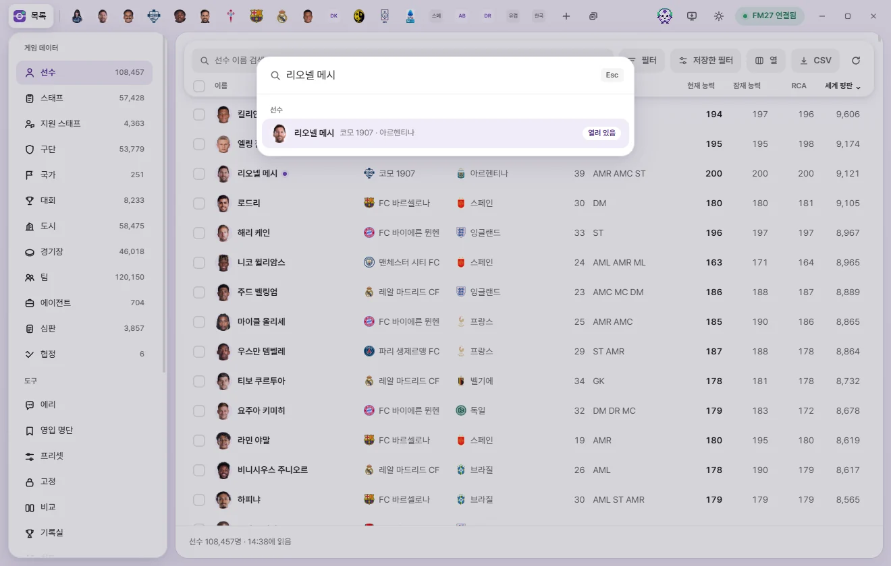

기본 사용법
탭과 빠른 열기·오른쪽 클릭 메뉴
편집 탭을 열고 닫고 되살리는 법, 탭 순서 바꾸기, Ctrl+K 빠른 열기, 오른쪽 클릭 메뉴의 모든 항목, 즐겨찾기를 정리했습니다.
FMAX는 선수·구단 같은 대상 하나를 열 때마다 위쪽 막대에 탭을 하나 만듭니다. 브라우저 탭처럼 여러 개를 열어 두고 옮겨 다닙니다. 탭은 닫을 때까지 남아 있고, FMAX를 다시 켜도 그대로 돌아옵니다.
탭 열기
다음 어느 방법으로든 열 수 있습니다.
- 목록에서 줄을 누르거나, 줄을 고른 뒤 Enter.
- Ctrl+K 또는 탭 막대의 +로 빠른 열기.
- 밑줄 친 이름 누르기(이름을 눌러 그 대상으로 가기).
- 사이드바의 내 감독·구단, 즐겨찾기, 최근 편집.
- 오른쪽 클릭 메뉴의 탭으로 열기.
- 목록에서 여러 줄을 고른 뒤 아래쪽 탭으로 열기(20개까지).
- 탭 막대의 게임 화면 열기 단추(Ctrl+G): 게임에서 지금 보고 있는 선수·스태프·구단·팀을 엽니다.
이미 열려 있는 대상을 다시 열면 새 탭을 만들지 않고 그 탭으로 갑니다. 탭은 열 때마다 게임에서 그 대상을 새로 읽습니다.
탭 옮겨 다니기
- 탭을 누르면 그 탭으로 갑니다. 맨 왼쪽 목록을 누르면 목록 화면으로 돌아갑니다.
- Ctrl+Tab은 다음 탭, Ctrl+Shift+Tab은 앞 탭입니다. 목록 화면도 한 칸으로 셉니다.
- Ctrl+1은 목록 화면, Ctrl+2~Ctrl+8은 왼쪽부터 첫 번째~일곱 번째 탭, Ctrl+9는 마지막 탭입니다.
- 탭이 많아 막대에 다 안 들어가면 탭 위에서 마우스 휠을 돌려 옆으로 넘깁니다.
탭이 많아질수록 탭이 좁아지고, 좁으면 이름 없이 얼굴이나 로고만 보입니다. 마우스를 올리면 '리오넬 메시 · 선수'처럼 이름과 종류가 뜹니다.
저장하지 않은 값이 있는 탭은 닫기(×) 자리에 보라색 점이 보입니다. 마우스를 올리면 다시 ×가 됩니다.
탭 순서 바꾸기
탭을 누른 채 옆으로 끌면 순서가 바뀝니다. 조금(몇 픽셀) 이상 움직여야 끌기가 시작되므로, 그냥 누르면 탭만 바뀝니다. 바꾼 순서는 FMAX를 다시 켜도 그대로입니다.
탭 닫기
- 탭의 ×를 누르거나, 탭을 마우스 가운데 단추로 누릅니다.
- Ctrl+W: 지금 탭을 닫습니다. 목록 화면에서는 아무 일도 하지 않습니다.
- 탭 모두 닫기(탭이 두 개 이상일 때 + 옆에 생기는 단추) 또는 Ctrl+Shift+W: 열린 탭을 모두 닫고 목록으로 돌아갑니다.
×로 여러 탭을 연달아 닫을 때는, 마우스가 탭 막대를 벗어날 때까지 탭 너비가 그대로라서 다음 ×가 같은 자리에 옵니다.
닫은 탭 되살리기
탭을 닫으면 알림에 다시 열기 단추가 잠깐 뜹니다. 누르거나 Ctrl+Shift+T를 누르면 마지막으로 닫은 탭이 원래 자리에, 보던 하위 페이지와 저장하지 않았던 값까지 그대로 돌아옵니다.
- Ctrl+Shift+T를 여러 번 누르면 닫은 순서의 거꾸로 하나씩 돌아옵니다. 최근 30번 닫은 것까지 기억합니다.
- '탭 모두 닫기'로 닫은 것은 한 번에 모두 돌아오고, 보던 탭도 그대로입니다.
- 되살린 탭은 게임에서 다시 읽습니다. 그사이 게임 값이 바뀌었으면 저장하지 않았던 값은 지금 게임 값과 비교해 다시 맞춥니다. 게임 값이 이미 바꾸려던 값과 같으면 그 값은 빠집니다.
- 닫은 탭 기억은 FMAX를 끄면 사라집니다.
빠른 열기 (Ctrl+K)


Ctrl+K 또는 탭 막대의 +를 누르면 화면 가운데에 찾기 창이 뜹니다. 어느 화면에서든 됩니다.
- 이름 일부를 적습니다. 고유번호(
r-붙은 것도)를 적어도 됩니다. - 선수, 스태프, 구단 … 종류별로 맞는 이름이 나옵니다. 아무것도 적지 않으면 종류마다 4개, 적으면 8개까지 보입니다.
- ↑ ↓로 고르고 Enter, 또는 마우스로 누르면 탭이 열립니다.
Esc, Ctrl+K를 다시 누르거나 창 바깥을 누르면 닫힙니다. 빠른 열기는 이름으로만 찾습니다(소속·국적으로는 찾지 않습니다). 목록에 없는 언어도 여기서 찾아 열 수 있습니다. 게임에서 목록을 읽기 전에는 '게임에서 목록을 읽은 뒤에 찾을 수 있습니다'가 나옵니다.
찾은 이름에서 오른쪽 클릭하면 아래 오른쪽 클릭 메뉴가 나옵니다.
오른쪽 클릭 메뉴

대상 하나를 가리키는 곳이면 어디서든 오른쪽 클릭으로 메뉴가 나옵니다.
- 목록의 줄(줄 안의 소속·국적 같은 이름은 그 이름의 대상)
- 편집 탭의 밑줄 친 이름, 구단 탭의 선수단·스태프 표의 줄
- 빠른 열기의 결과, 사이드바의 내 감독·구단, 즐겨찾기, 최근 편집
키보드로는 목록 줄이나 이름에 초점을 두고 메뉴 키 또는 Shift+F10을 누릅니다. 검색창처럼 글을 적는 칸에서는 이 메뉴가 나오지 않습니다.
메뉴 맨 위에는 이름과 '선수 · 고유번호 7458500'이 나옵니다. 여러 개를 골라 둔 줄에서 오른쪽 클릭하면 '3명 골랐습니다'가 나오고, 고른 것 모두에 적용됩니다.
한 개일 때와 여러 개일 때 공통
| 항목 | 하는 일 | 게임에 쓰는 때 |
|---|---|---|
| 탭으로 열기 (여러 개: 탭 3개로 열기) | 탭으로 엽니다. 한 번에 20개까지 엽니다(넘으면 흐리게 막힙니다). | — |
| 고유번호 복사 (여러 개: 고유번호 3개 복사) | 고유번호를 복사합니다. 생성선수는 r-12345처럼 복사합니다. 여러 개는 한 줄에 하나씩입니다. | — |
| 영입 명단에 넣기 | 선수·스태프만. 넣을 명단을 고르거나 '새 명단을 만들어 넣기'를 누릅니다. 이미 있는 사람은 그대로 둡니다. 영입 명단 | 게임에 쓰지 않습니다. |
| 이 명단에서 빼기 | 영입 명단 화면에서만. 지금 명단에서 뺍니다. | 게임에 쓰지 않습니다. |
| 즐겨찾기에 넣기 / 즐겨찾기에서 빼기 | 한 개일 때만. | 게임에 쓰지 않습니다. |
수정 묶음
| 항목 | 하는 일 | 게임에 쓰는 때 |
|---|---|---|
| 프리셋 적용 | 프리셋을 골라 적용합니다. 확인 창이 한 번 뜹니다. 프리셋 | 확인하면 바로 씁니다. |
| 직접 정해서 적용 | 프리셋 화면이 새 프리셋으로 열립니다. 이번에 할 수정을 정해 '적용'을 누르면 고른 대상에 씁니다. 저장하면 프리셋으로도 남습니다. 프리셋 | 적용을 누르면 바로 씁니다. |
| 값 고정 (여러 개: 3명 값 고정) | 고정 화면에서 고른 값을 지금 게임 값으로 고정합니다. 고정 화면에서 값을 골라 두었을 때만 보입니다. 고정 | FMAX가 켜져 있는 동안 지킵니다. |
⚡ 게임 에디터 묶음 (한 개일 때)
대상 하나에서 오른쪽 클릭하면 그 종류의 ⚡ 메뉴 항목이 '⚡ 이적', '⚡ 상태'처럼 묶음으로 나옵니다. 고르면 그 대상의 탭이 열리고, 탭의 ⚡ 메뉴에서 고른 것과 똑같이 확인 창을 거쳐 실행됩니다.
| 종류 | 묶음과 항목 |
|---|---|
| 선수 | 이적(내 구단으로 이적, 다른 구단으로 이적, 내 구단으로 임대, 다른 구단으로 임대, 계약 파기), 상태(모든 부상 제거, 모든 출장 정지 제거, 모든 불만 제거), 기록(홈그로운 추가, 유럽 선수로 인식, 능력치 고정, 능력치 고정 풀기, 취업 허가 주기, 취업 허가 빼기), 국적·출생(국적 바꾸기, 출생 도시 바꾸기), 국가대표·병역(국가대표 은퇴, 국가대표 은퇴 취소, 병역 마침으로, 병역 면제로, 병역 기록 없애기) |
| 스태프 | 이적(내 구단으로 이적, 다른 구단으로 이적, 계약 파기), 대표팀(대표팀에 넣기, 대표팀 계약 파기), 인물(국적 바꾸기, 출생 도시 바꾸기, 여자로 바꾸기, 남자로 바꾸기) |
| 팀 | 선수 전체(모든 선수 부상 제거, 모든 선수 출장 정지 제거, 모든 선수 불만 제거, 팀 사기 바꾸기), 팀(팀 결속력 끌어올리기, 전술 이해도 최대로) |
| 구단 | 구단(라이선스 유니폼 쓰기, 라이선스 유니폼 안 쓰기), 목표(보드 목표 지우기, 서포터 목표 지우기) |
| 내 감독 | 감독(해고 불가능 켜기·끄기, 계약 파기, 대표팀 계약 파기, 다른 구단으로 이동, 다른 국가대표 팀으로 이동), 검색(검색에 모든 선수 보이기, 검색에 모든 선수 보이기 끄기, 검색에 모든 스태프 보이기, 검색에 모든 스태프 보이기 끄기) |
- '내 구단으로 이적·임대'는 FMAX가 내 구단을 알 때만 나옵니다.
- '예정된 이적 취소'와 '은퇴 예정일 바꾸기'는 오른쪽 클릭 메뉴에 없습니다. 게임에 예정이 있는지 읽어야 해서 탭의 ⚡ 메뉴에만 나옵니다.
- 국가대표 은퇴·병역·성별 항목은 지금 상태로 바꿀 것이 없으면 실행할 때 '이미 그렇게 되어 있어서 바꿀 것이 없습니다'라고 알립니다.
각 기능이 무엇을 하는지는 게임 에디터 (⚡)에 있습니다.
⚡ 한 번에 (여러 개일 때)
여러 명을 골라 오른쪽 클릭하면, 한 사람씩 조건을 정하지 않아도 되는 기능만 '⚡ 한 번에'로 나옵니다. 이적처럼 하나씩 정해야 하는 것은 빠집니다.
| 종류 | 항목 |
|---|---|
| 선수 | 모든 부상 제거, 모든 출장 정지 제거, 모든 불만 제거, 능력치 고정, 능력치 고정 풀기, 취업 허가 주기, 취업 허가 빼기, 국가대표 은퇴, 국가대표 은퇴 취소, 병역 마침으로, 병역 면제로, 병역 기록 없애기 |
| 스태프 | 여자로 바꾸기, 남자로 바꾸기 |
고르면 그 기능 하나만 든 프리셋처럼 확인 창을 거쳐 한 명씩 차례로 실행합니다. 처음 쓸 때는 세이브를 백업했는지 한 번 묻습니다.
⚡ 구단 선수 전체 (구단일 때)
구단에서 오른쪽 클릭하면 '⚡ 구단 선수 전체'(여러 구단이면 '⚡ 구단 3곳의 선수 전체')가 나옵니다.
| 항목 | 하는 일 |
|---|---|
| 모든 선수 부상 제거 | 이 구단에서 뛰는 선수 모두 낫고 컨디션·경기 감각이 100%가 됩니다. |
| 모든 선수 출장 정지 제거 | 이 구단에서 뛰는 선수 모두의 출장 정지를 없앱니다. |
| 모든 선수 불만 제거 | 이 구단에서 뛰는 선수 모두의 불만을 없앱니다. |
게임에 연결되어 있어야 합니다. 그 구단 소속 선수를 찾아 확인 창을 거쳐 한 명씩 실행합니다.
선택 해제
여러 개를 골라 연 메뉴의 맨 아래에 선택 해제가 있습니다. 고른 것을 모두 풉니다.
표에서 여러 명 고르기
구단 탭의 선수단 표와 스태프 표에도 줄 왼쪽에 체크 칸이 있습니다. 목록처럼 누르면 고르고, Shift를 누른 채 누르면 사이를 모두 고릅니다. 표 머리의 칸은 그 표 전체를 고르거나 풉니다. Ctrl+A는 그 페이지의 표를 모두 고르고, Esc는 풉니다.
골라 두면 탭 아래에 '3명 골랐습니다' 막대가 생깁니다.
| 단추 | 하는 일 |
|---|---|
| 영입 명단에 넣기 | 고른 사람을 영입 명단에 넣습니다. |
| 프리셋 적용 | 고른 사람에게 프리셋을 바로 적용합니다. |
| 탭으로 열기 | 고른 사람을 탭으로 엽니다(20명 이하일 때). |
| 선택 해제 | 고른 것을 풉니다. |
고른 줄에서 오른쪽 클릭하면 더 많은 기능(위 오른쪽 클릭 메뉴)이 나옵니다. 고른 것은 그 탭이 열려 있는 동안만 기억합니다.
이름을 눌러 그 대상으로 가기
FMAX 곳곳에서 다른 대상의 이름은 눌러서 그 대상으로 갈 수 있습니다. 예를 들면 선수 목록의 소속·국적, 편집 탭 머리의 소속 구단·국적, 정보 페이지의 출생 도시·경기장 같은 이름입니다. 이런 이름에는 옅은 밑줄이 있고(목록 칸에서는 마우스를 올리면 생깁니다), 마우스를 올리면 '구단 탭 열기'처럼 뜹니다. 누르면 그 대상의 탭이 열립니다. 키보드로는 초점을 두고 Enter를 누릅니다.
구단 탭의 선수단·스태프 표처럼 사람이 줄마다 있는 표는 줄을 누르면 그 사람의 탭이 열립니다.
즐겨찾기
자주 여는 대상을 사이드바 '즐겨찾기'에 모아 둡니다.
- 넣기·빼기: 편집 탭 머리 오른쪽의 별 단추, 또는 오른쪽 클릭 메뉴의 '즐겨찾기에 넣기·빼기'.
- 열기: 사이드바 즐겨찾기에서 이름을 누릅니다.
- 사이드바에서 빼기: 줄 오른쪽 ×.
- 목록에서 즐겨찾기한 대상 이름 옆에는 별이 붙습니다.
즐겨찾기는 게임에 쓰지 않습니다. 세이브마다 따로 기억합니다. 한 세이브에서 생긴 생성선수는 다른 세이브에서는 다른 사람이기 때문입니다(세이브마다 따로 기억하는 것).
FMAX를 다시 켜면
열어 둔 탭, 탭 순서, 탭마다 보던 하위 페이지, 마지막으로 보던 탭과 사이드바 항목은 FMAX를 다시 켜도 그대로 돌아옵니다. 탭의 값은 다시 켤 때 게임에서 새로 읽습니다.